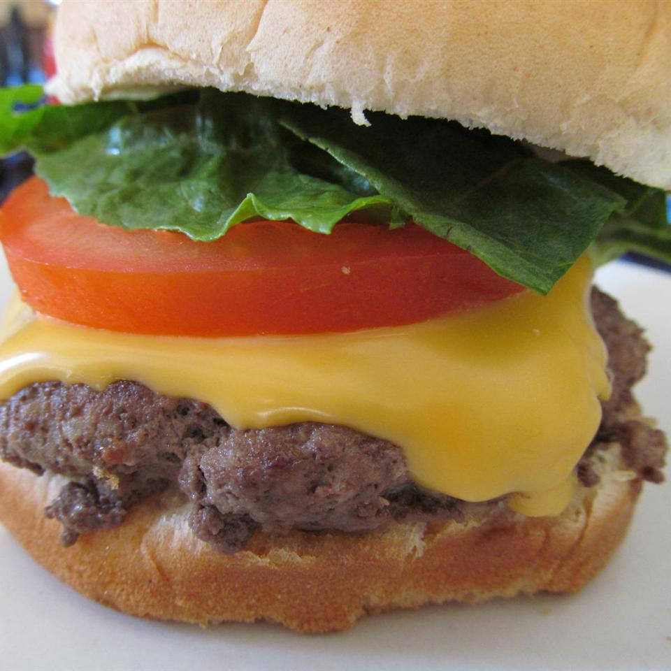

Cheeseburgers

Description
A delicious American Classic rendition of the Cheeseburger, served on buns with lettuce, tomatoes, ketchup, mustard, and onions.
These are made with Ground Beef, Eggs, Garlic, and topped with Steak Sauce for extra flavor.
Ingredients
- 1 Pound Ground Beef
- 1 Egg
- 2 Teaspoons Minced Garlic
- 1 Tablespoon Steak Sauce (A-1 Preferred)
Steps
- Preheat an outdoor grill for high heat.
- In a medium bowl, mix together the ground beef, egg, and garlic. Mix in steak sauce until mixture is sticky feeling. Form into 3 or 4 balls, and flatten into patties.
- Grill for about 10 minutes, turning once, or to your desired degree of doneness. The internal temperature should be at 180 degrees F (82 degrees C) when taken with a meat thermometer. Serve on buns with the usual trimmings.
Serving Time & Info
- Prep: 5 Minutes
- Cook: 10 Minutes
- Total: 15 Minutes
- Servings: 4
Nutritional Information
- Protein: 20.6g
- Carbohydrates: 1.1g
- Fiber: 0.1g
- Sugar: 0.1g
- Fat: 31.4g
- Calories Per Serving: 374